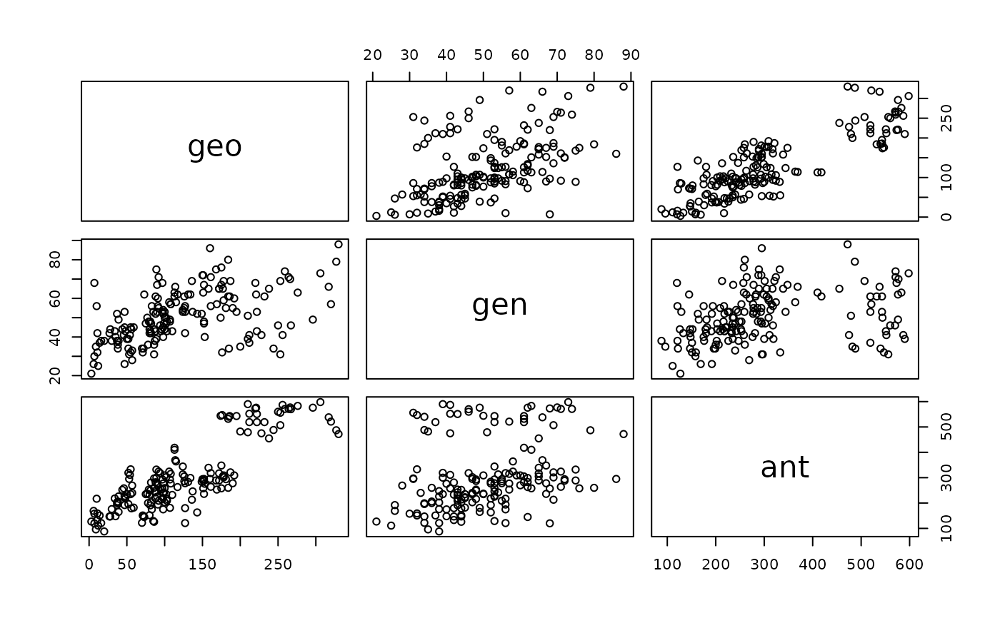
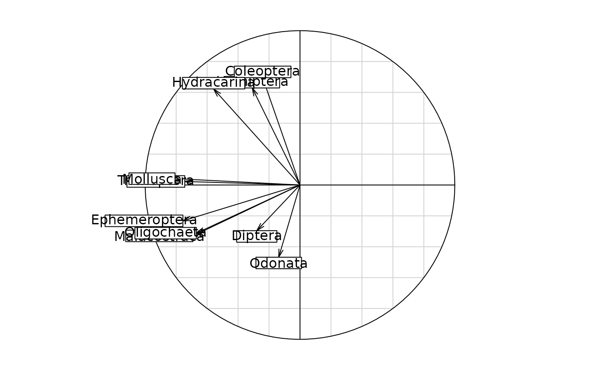
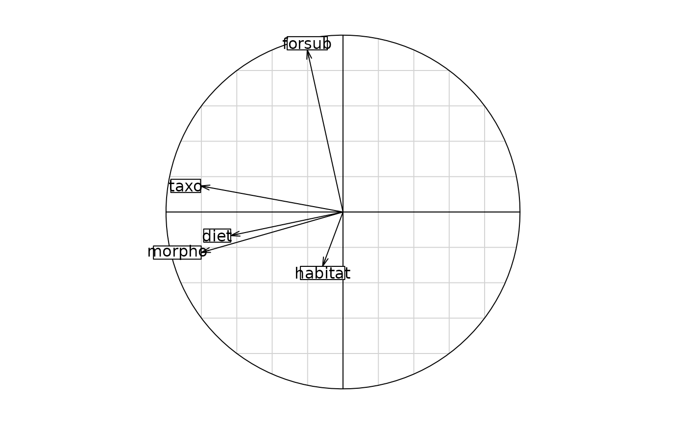

the class of objects 'kdist' (K distance matrices)
kdist.RdAn object of class kdist is a list of distance matrices observed on the same individuals
Arguments
- ...
a sequence of objects of the class
kdist.- epsi
a tolerance threshold to test if distances are Euclidean (Gower's theorem) using \(\frac{\lambda_n}{\lambda_1}\) is larger than -epsi.
- upper
a logical value indicating whether the upper of a distance matrix is used (TRUE) or not (FALSE).
Details
The attributs of a 'kdist' object are:names: the names of the distancessize: the number of points between distances are knownlabels: the labels of pointseuclid: a logical vector indicating whether each distance of the list is Euclidean or not.call: a call orderclass: object 'kdist'
References
Gower, J. C. (1966) Some distance properties of latent root and vector methods used in multivariate analysis. Biometrika, 53, 325--338.
Author
Daniel Chessel
Anne-Béatrice Dufour anne-beatrice.dufour@univ-lyon1.fr
Examples
# starting from a list of matrices
data(yanomama)
lapply(yanomama,class)
#> $geo
#> [1] "matrix" "array"
#>
#> $gen
#> [1] "matrix" "array"
#>
#> $ant
#> [1] "matrix" "array"
#>
kd1 = kdist(yanomama)
print(kd1)
#> List of distances matrices
#> call: kdist(yanomama)
#> class: kdist
#> number of distances: 3
#> size: 19
#> labels:
#> [1] "1" "2" "3" "4" "5" "6" "7" "8" "9" "10" "11" "12" "13" "14" "15"
#> [16] "16" "17" "18" "19"
#> geo: non euclidean distance
#> gen: non euclidean distance
#> ant: non euclidean distance
# giving the correlations of Mantel's test
cor(as.data.frame(kd1))
#> geo gen ant
#> geo 1.0000000 0.5098684 0.8428053
#> gen 0.5098684 1.0000000 0.2995506
#> ant 0.8428053 0.2995506 1.0000000
pairs(as.data.frame(kd1))

# starting from a list of objects 'dist'
data(friday87)
fri.w <- ktab.data.frame(friday87$fau, friday87$fau.blo,
tabnames = friday87$tab.names)
fri.kd = lapply(1:10, function(x) dist.binary(fri.w[[x]],2))
names(fri.kd) = friday87$tab.names
unlist(lapply(fri.kd,class)) # a list of distances
#> Hemiptera Odonata Trichoptera Ephemeroptera Coleoptera
#> "dist" "dist" "dist" "dist" "dist"
#> Diptera Hydracarina Malacostraca Mollusca Oligochaeta
#> "dist" "dist" "dist" "dist" "dist"
fri.kd = kdist(fri.kd)
#> Warning: Zero distance(s)
#> Warning: Zero distance(s)
#> Warning: Zero distance(s)
#> Warning: Zero distance(s)
#> Warning: Zero distance(s)
#> Warning: Zero distance(s)
#> Warning: Zero distance(s)
#> Warning: Zero distance(s)
fri.kd
#> List of distances matrices
#> call: kdist(fri.kd)
#> class: kdist
#> number of distances: 10
#> size: 16
#> labels:
#> [1] "Q" "P" "R" "J" "E" "C" "D" "K" "B" "A" "G" "M" "L" "F" "H" "N"
#> Hemiptera: euclidean distance
#> Odonata: euclidean distance
#> Trichoptera: euclidean distance
#> Ephemeroptera: euclidean distance
#> Coleoptera: euclidean distance
#> Diptera: euclidean distance
#> Hydracarina: euclidean distance
#> Malacostraca: euclidean distance
#> Mollusca: euclidean distance
#> Oligochaeta: euclidean distance
s.corcircle(dudi.pca(as.data.frame(fri.kd), scan = FALSE)$co)

# starting from several distances
data(ecomor)
d1 <- dist.binary(ecomor$habitat, 1)
d2 <- dist.prop(ecomor$forsub, 5)
d3 <- dist.prop(ecomor$diet, 5)
d4 <- dist.quant(ecomor$morpho, 3)
d5 <- dist.taxo(ecomor$taxo)
ecomor.kd <- kdist(d1, d2, d3, d4, d5)
#> Warning: Zero distance(s)
#> Warning: Zero distance(s)
#> Warning: Zero distance(s)
names(ecomor.kd) = c("habitat", "forsub", "diet", "morpho", "taxo")
class(ecomor.kd)
#> [1] "kdist"
s.corcircle(dudi.pca(as.data.frame(ecomor.kd), scan = FALSE)$co)

data(bsetal97)
X <- prep.fuzzy.var(bsetal97$biol, bsetal97$biol.blo)
#> 17 missing data found in block 1
#> 14 missing data found in block 2
#> 28 missing data found in block 3
#> 8 missing data found in block 4
#> 5 missing data found in block 5
#> 19 missing data found in block 6
#> 10 missing data found in block 7
#> 5 missing data found in block 8
#> 2 missing data found in block 9
#> 12 missing data found in block 10
w1 <- attr(X, "col.num")
w2 <- levels(w1)
w3 <- lapply(w2, function(x) dist.quant(X[,w1==x], method = 1))
names(w3) <- names(attr(X, "col.blocks"))
w3 <- kdist(list = w3)
#> Warning: Zero distance(s)
#> Warning: Zero distance(s)
#> Warning: Zero distance(s)
#> Warning: Zero distance(s)
#> Warning: Zero distance(s)
#> Warning: Zero distance(s)
#> Warning: Zero distance(s)
#> Warning: Zero distance(s)
#> Warning: Zero distance(s)
#> Warning: Zero distance(s)
s.corcircle(dudi.pca(as.data.frame(w3), scan = FALSE)$co)
data(rpjdl)
w1 = lapply(1:10, function(x) dist.binary(rpjdl$fau, method = x))
w2 = c("JACCARD", "SOKAL_MICHENER", "SOKAL_SNEATH_S4", "ROGERS_TANIMOTO")
w2 = c(w2, "CZEKANOWSKI", "S9_GOWER_LEGENDRE", "OCHIAI", "SOKAL_SNEATH_S13")
w2 <- c(w2, "Phi_PEARSON", "S2_GOWER_LEGENDRE")
names(w1) <- w2
w3 = kdist(list = w1)
w4 <- dudi.pca(as.data.frame(w3), scan = FALSE)$co
w4
#> Comp1 Comp2
#> JACCARD -0.9791013 -0.18151963
#> SOKAL_MICHENER -0.8693893 0.48952277
#> SOKAL_SNEATH_S4 -0.9673038 -0.17757093
#> ROGERS_TANIMOTO -0.8760634 0.48095455
#> CZEKANOWSKI -0.9811773 -0.18245217
#> S9_GOWER_LEGENDRE -0.8693893 0.48952277
#> OCHIAI -0.9801507 -0.18304997
#> SOKAL_SNEATH_S13 -0.9882272 -0.12063315
#> Phi_PEARSON -0.9955160 -0.03143543
#> S2_GOWER_LEGENDRE -0.8342624 -0.49634908